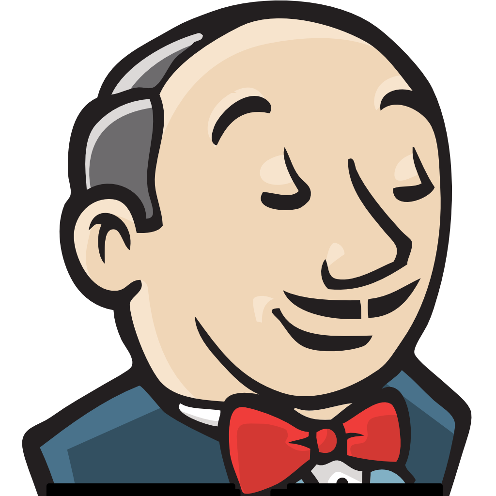
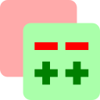

|
|||||||
|
|||||||
|
|||||||
|
|||||||
|
|||||||
|
|||||||
Viele Dienste erfordern eine individuelle Anmeldung, ein bequemer Wechsel zwischen Diensten ist somit nicht möglich. Die Benutzeroberflächen der Dienste unterscheiden sich ebenfalls stark voneinander. Einige Services werden nicht von dem HRZ betrieben, sondern von Dozenten, Fachbereichen, Studenten etc., was eine einheitliche Verwaltung zusätzlich erschwert.
Ein zentraler Dienst, der den Zugriff auf die genannten Informationen und Materialien bündelt, ist nicht vorhanden.
Das Athene Portal Light soll Benutzern die Möglichkeit geben, alle relevanten Informationen und Funktionen über ein zentrales Portal mit einer einzigen Anmeldung zu erreichen.
Das Portal bündelt die Funktionen der bestehenden, autonomen Dienste, indem auf deren Inhalte zugegriffen wird oder die Benutzeraktionen weitergeleitet werden. Die Inhalte der einzelnen Dienste werden im Portal grafisch aufbereitet und auf übersichtlichen, durch den Nutzer konfigurierbaren Oberflächen dargestellt.
Das Softwaredesign des Portals soll besonders auf die Erweiterbarkeit der Funktionalitäten ausgelegt sein, damit es möglich ist, weitere Informationsdienste, wie zum Beispiel eine Stundenplanansicht, realisieren zu können.
- gute Rollenverteilung + Vertreter bestimmen
- klare Aufgabenverteilung
- früh implementieren + testen
- früh Infrastruktur aufbauen
- Code Repository (z.B. Git)
- Continuous Integration (z.B. Jenkins)
- Projektmanagement-Tool (z.B. kunagi)
- Zeiterfassung konsequent und wohl-kategorisiert durchführen
- Auftraggeber (AG) aus Designentscheidungen heraushalten
- Gesprächsinitiative/-leitung in AG-Meetings ergreifen
- früh Feedback einholen (vom Team, STG-Betreuer und AG)
- auf Entwicklungsprozess einigen
- interne Deadlines festlegen
- interne Reviews einplanen und prozessgetreu durchführen
- effiziente Kommunikation
- Timeboxing, besonders für Meetings (<1 Stunde)
- Agenden (Team- und AG-Meeting) im Voraus festlegen
| Git - Codeversionierung und verteiltes Programmieren | |
|  | Jenkins - Continuous Integration/Checkstyle-Enforcement |
|  | Gerrit - Code-Review |
| JUnit - Tests | |
| Kunagi - Projektmanagement ausgelegt auf Scrum | |
| Google-Drive - schnelle Dokumententwürfe, Brainstorming, Agenden | |
| SVN - Dokumentenverwaltung/-versionierung | |
| Eclipse - Entwicklungsumgebung | |
| Maven - Abstraktion vom Build-Prozess, Dependency-Management | |
| LaTeX - Dokumentenerstellung |
 Eigene Apps zum Dashboard hinzufügen:
Unser Code Review-Prozess:
Eigene Apps zum Dashboard hinzufügen:
Unser Code Review-Prozess: